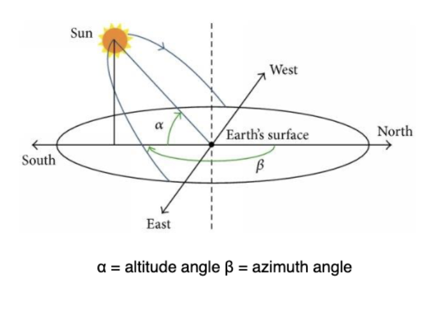
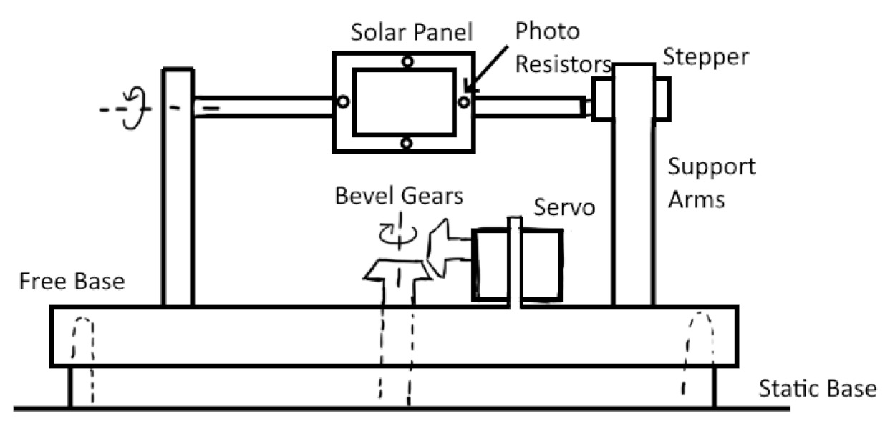
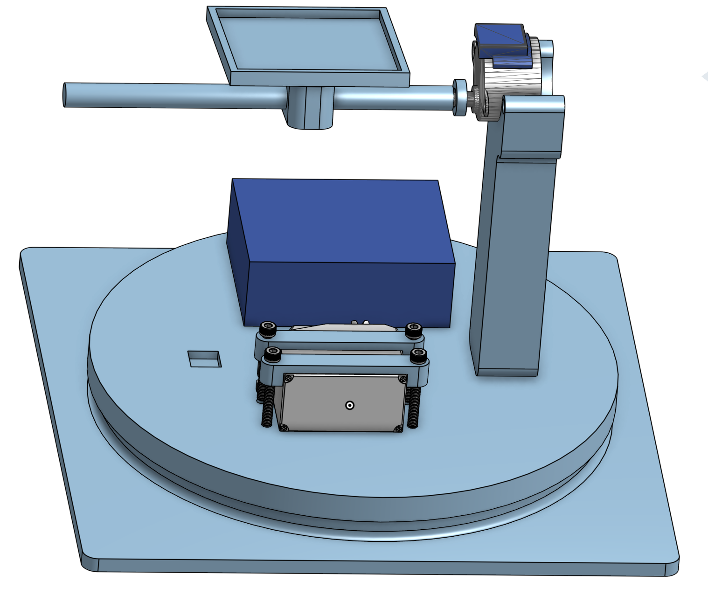
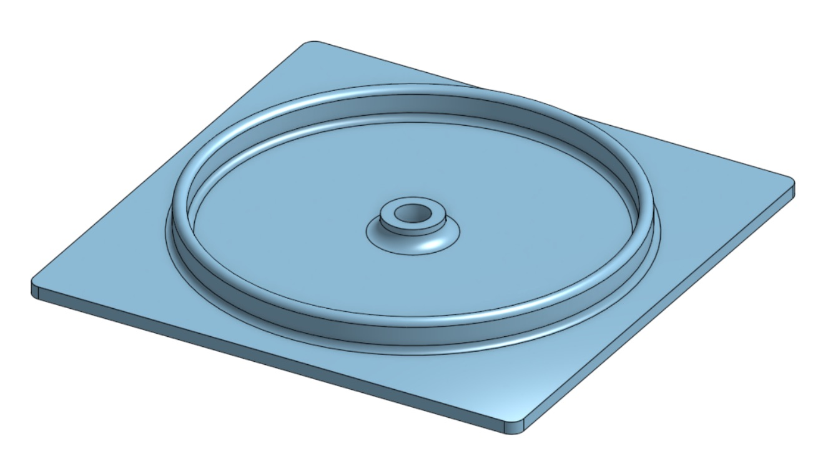
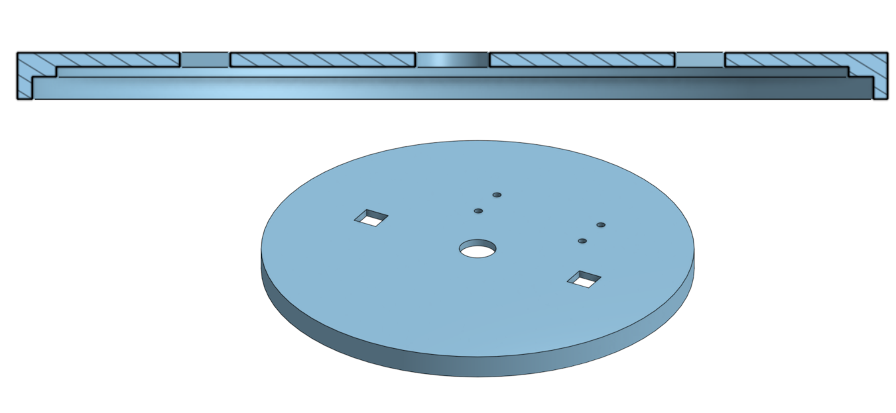
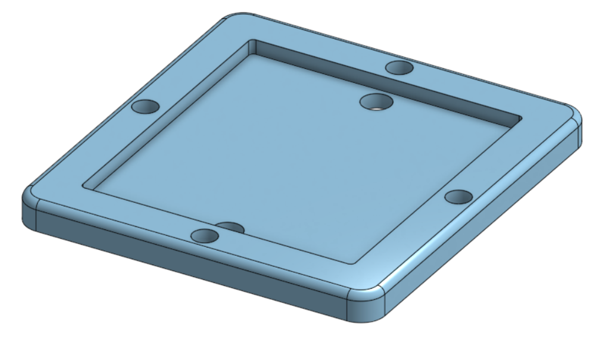
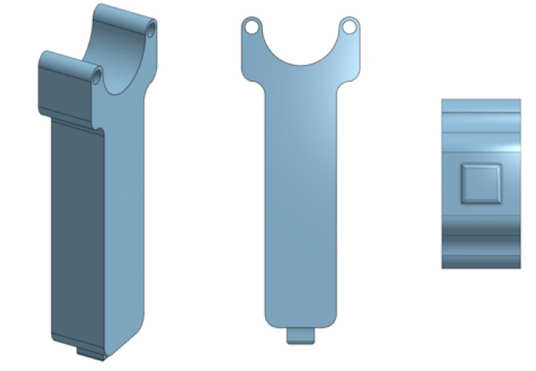
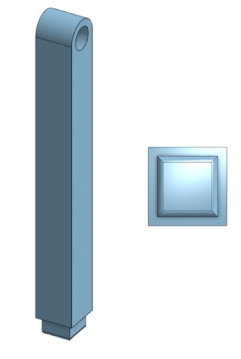
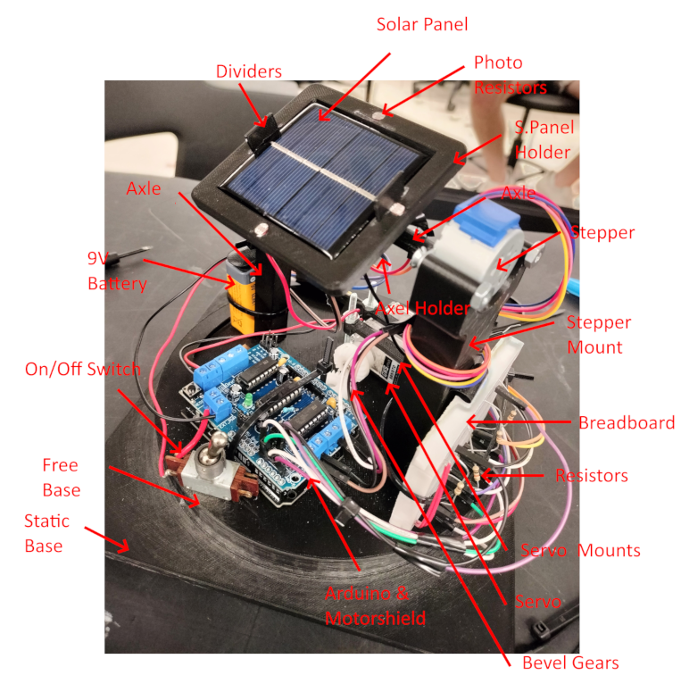

Dual-Axis Solar Tracker
Project Goal
To design a dual-axis solar tracker for a small solar array panel capable of changing position
with changes in light source altitude and azimuth.

Design Prototype

Multiple CAD Iterations with Onshape


Static Base

Free Base

Solar Panel Holder

Stepper Mount

Axle Support
Finished Product

The finished product is capable of moving toward a light source within a ±3° variation radially and circumferentially.
Demo video